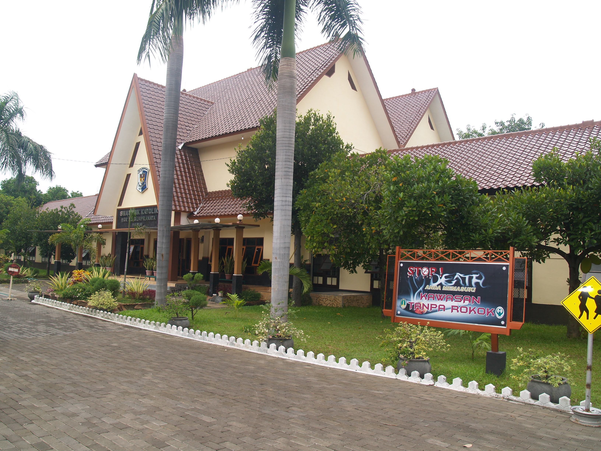

Pada tahun 1963 dirasakan oleh masyarakat Pasuruan khususnya para orang tua murid suatu kebutuhan akan adanya satu SMAK sebagai lanjutan dari SMPK Sang Timur mengingat bahwa sampai saat itu para orang tua murid harus mengirimkan putra putrinya ke kota lain seperti Malang atau Surabaya untuk dapat melanjutkan studinya pada tingkat SMA.
Dari pemikiran itu, maka didirikanlah SMAK Mgr. Soegijapranata Pasuruan pada tanggal 12 Agustus 1963 dikelola Yayasan Karmel Keuskupan Malang dan sementara menempati gedung SMPK Sang Timur dan Perumahan Percetakan PT. Merdeka Sejati Jl. KH. Wachid Hasyim Pasuruan.
Pada tahun ajaran 1964/1965 sekolah ini mulai menempati gedung sendiri yang terletak di Jl. Panglima Sudirman no 64 Pasuruan. Didirikan di atas tanah seluas 9.150 m2 dengan status tanah HGB. Lokasi sekolah yang sangat strategis yang terletak di tengah kota yang dapt dijangkau dengan mudah baik menggunakan kendaraan pribadi maupun kendaraan umum.